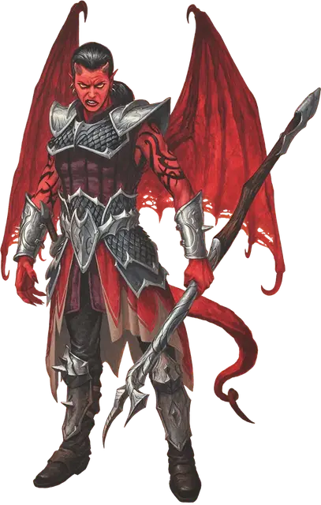

Камбион
Cambion
Среднее Исчадие, любое злое мировоззрение

Класс Доспеха 19 (чешуйчатый доспех)
Хиты 82 (11к8 + 33)
Скорость 30 футов, летая 60 футов
| мод | спас | ||
|---|---|---|---|
| СИЛ | 18 | +4 | +7 |
| ЛОВ | 18 | +4 | +4 |
| ТЕЛ | 16 | +3 | +6 |
| мод | спас | ||
|---|---|---|---|
| ИНТ | 14 | +2 | +5 |
| МДР | 12 | +1 | +1 |
| ХАР | 16 | +3 | +6 |
Навыки Восприятие +4, Запугивание +6, Обман +6, Скрытность +7
Сопротивление урону огонь, холод, электричество, яд; дробящий, колющий, рубящий от немагических атак
Чувства тёмное зрение 60 футов, пассивное Восприятие 14
Языки Общий, Бездны, Инфернальный
Опасность 5 (1800 опыта)
Бонус мастерства +3
Среда обитания Город
Особенности
Благословение исчадия. . КД камбиона включает бонус Харизмы.
Врождённое колдовство. Базовой характеристикой камбиона является Харизма (Сл спасброска от заклинания 14). Он может накладывать следующие заклинания, не нуждаясь в материальных компонентах:
• 3/день каждое: обнаружение магии [detect magic], приказ [command], смена обличья [alter self];
• 1/день: уход в иной мир [plane shift] (только на себя).
Демонические камбионы. Происходящий от демона камбион может иметь особенности, присущие культистам демона, которые описаны в разделе демонические благословения.
Немногие демоны вступают в связь со смертными, и те, у кого есть обаяние или страсть, обычно дают своим детям камбионам способность Чары исчадия.
Культисты Бафомета и Оркуса могут проводить отвратительные обряды, чтобы наполнить силой своего хозяина молодого или не родившегося ребёнка, превратив его в чемпиона культа, обладающего особыми способностями; камбион, связанный с Оркусом, заменяет Чары исчадия на Порождение могилы, а камбион, связанный с Бафометом, – на Зов рогатого. (Mornenkainens Tome of Foes)
Зов рогатого. Когда камбион атакует мультиатакой только одно существо, он может выбрать одного союзника, которого может видеть в пределах 30 футов. Этот союзник может использовать реакцию, чтобы совершить одну рукопашную атаку по любой цели на свой выбор.
Порождение могилы. В конце каждого хода камбиона нежить по его выбору, которую он может видеть в пределах 30 футов, получает 10 временных хитов, пока камбион не недееспособен.
Кроме того, этот камбион может применять особенность Врождённое колдовство, чтобы наложить заклинание восставший труп [animate dead] 3/день.
Инфернальные камбионы. Некоторые архидьяволы якшаются со смертными и производят на свет отпрысков – камбионов. Большинство из них обладают типичными характеристиками камбиона (как описано в Бестиарии), но некоторые получают способности, напоминающие об их архидьявольских прародителях. (Mornenkainens Tome of Foes)
Характерные заклинания. У камбионов есть особенность «Врождённое колдовство». При создании инфернального камбиона вы можете заменить заклинания из данной черты на заклинания того же уровня из списка характерных заклинаний, используемых культами данного прародителя. Камбион может использовать каждое из этих заклинаний раз в день.
Специальные особенности. Камбион, связанный с конкретным дьяволом, обычно получает специальные особенности, которые присущи культистам этого дьявола.
Некоторые дьяволы даруют своим порождениям уникальную способность, которая заменяет особенность «Чары исчадия»; Зариэль и Герион склонны порождать камбионов, которые будут служить в качестве военачальников для их последователей. Они оба даруют способность «Ярость Девяти» вместо «Чар исчадия».
Ярость Девяти. Бонусным действием камбион выбирает другое существо, которое он может слышать или видеть в пределах 120 футов от себя. Это существо получает преимущество на все броски атаки и спасброски на следующую минуту или пока камбион не использует эту способность снова.
Действия
Мультиатака. Камбион совершает две рукопашные атаки или два раза использует Огненный луч.
Копье. Рукопашная или дальнобойная атака оружием: +7 к попаданию, досягаемость 5 футов или дистанция 20/60 футов, одна цель. Попадание: Колющий урон 7 (1к6 + 4), или колющий урон 8 (1к8 + 4), если используется двумя руками для совершения рукопашной атаки, плюс урон огнём 3 (1к6).
Огненный луч. Дальнобойная атака заклинанием: +7 к попаданию, дистанция 120 футов, одна цель. Попадание: Урон огнём 10 (3к6).
Чары исчадия. Один гуманоид, видимый камбионом в пределах 30 футов, должен преуспеть в спасброске Мудрости Сл 14, иначе станет магическим образом очарованным на 1 день. Очарованная цель подчиняется устным командам камбиона. Если цель терпит вред от камбиона или другого существа, или получает самоубийственную команду от камбиона, цель может повторить спасбросок, оканчивая эффект на себе при успехе. Если спасбросок цели был успешным, или эффект на ней закончился, она получает иммунитет к Чарам исчадия этого камбиона на следующие 24 часа.
Описание
«ОНИ ВЫБИРАЮТСЯ ИЗ УТРОБ МАТЕРЕЙ, ЧТОБЫ НЕСТИ РАЗРУШЕНИЕ. НУ КАК ТАКИХ НЕ ЛЮБИТЬ?»
— БАБА ЯГА
Камбионы являются отпрысками исчадий (обычно суккубов или инкубов) и гуманоидов (обычно людей). Камбионы наследуют черты обоих родителей, однако рога, кожистые крылья и жилистые хвосты явно указывают на их чужеродное происхождение.
Рожденные быть плохими. Взрослея, камбионы развратом и пороками повергают в ужас даже самых преданных смертных родителей. Даже в юности камбионы позиционируют себя как владыки смертных. Они могут организовать бунты в городах, собирая банды гуманоидов и младших дьяволов себе в услужение.
Пешки сильных. Камбионы вынуждены служить исчадьям, из восхищения и страха, но втайне ожидая, что однажды займут их место. Камбионы, выросшие в Девяти Преисподних, служат солдатами, посланниками и личными слугами дьяволов. В Бездне камбионы занимают свое место исходя из своей силы и воли.
Порождения Граз’зта. Демонический повелитель Граз’зт любит сношаться с гуманоидами, которые заключили сделку с исчадиями, и он породил множество камбионов, которые помогают ему сеять хаос по всей мультивселенной. Отпрыски Граз’зта отличаются угольно-чёрной кожей, раздвоенными копытами, шестипалыми руками и невероятной красотой.